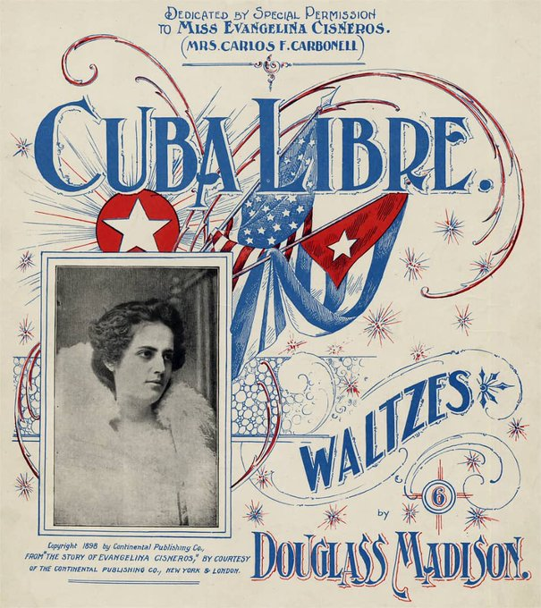

Los Hilos de Monik
Evangelina Cosío Cisneros
Publicado el 28 de junio de 2020 - 18 tweets - Hilo original en Twitter
1
Evangelina Cosío Cisneros ... ¿te suena el nombre? Probablemente no.
La vida de esta cubana merece una película: una mujer hermosa y patriota, un español que intenta violarla, un americano que la rescata, un escape de prisión...
Interesante ¿eh? Te cuento aquí su historia.

2
En 1896 el camagüeyano Agustín Cosío fue apresado por apoyar la insurrección. Inicialmente se le condenó a muerte.
Pero su hija de 17 años, Evangelina, apeló ante la corte de Cienfuegos (que propuso enviarlo a una prisión en Africa) y luego ante el propio Weyler.
3
Weyler aceptó la propuesta de Evangelina de enviar a Agustín, a ella y a su hermana a un campamento en Isla de Pinos.
Al inicio vivían en libertad, pero tras la llegada del Coronel José Berriz - protegido de Weyler y sobrino del Primer Ministro- Agustín fue puesto en la cárcel.
4
Y aquí es cuando comienza la odisea de Evangelina.
La versión más conocida es que el Coronel Berriz comenzó a acosarla. Una noche, se coló en la residencia donde vivía Evangelina, e intentó abusar de ella. Ante sus gritos, unos vecinos entraron y ataron a Berriz a una silla.
5
Berriz fue rescatado por una patrulla que pasaba. A Evangelina se le acusó de seducirlo para secuestrarlo e intentar asesinarlo.
Cual de las dos versiones son ciertas? Es difícil saberlo. ¿Fue realmente un acto de patriotismo o un intento de violación?
Nunca quedó claro.
6
Weyler emitió un cable público que decía: se realizará juicio a una persona llamada Evangelina Cosio y Cisneros, quien engañó a un comandante militar para entrar en su casa, donde tenía hombres escondidos para intentar asesinarle.
¿Una Judith cubana? Pudiera ser.
7
La consecuencia de este episodio es que a Evangelina la envían a La Habana, confinándola en la Casa de Recogidas, pero sin juzgarla.
¿Se acuerdan del periódico NY Journal? Pues aquí es donde se pone buena la cosa. Este periódico comenzó una campaña para liberar a Evangelina.
8
La historia de Evangelina pudo ser anónima. Fue la prensa estadounidense quien la hizo famosa.
Su historia tenía todos los ingredientes para "vende"”. El cable de Weyler se publicó solo 4 días después de que el Journal mencionara a Evangelina, e hizo que creciera el interés.
9
Periódico amarillista, convirtió a Evangelina en "la mártir cubana", calificándola "la mujer más hermosa de Cuba", "bestialmente perseguida" por España.
El Journal logró que mujeres como la madre del Presidente McKinley y la viuda de Jefferson Davis, abogaran por Evangelina.
10
Pero la campaña de presiones no prosperó y Evangelina continuó en prisión.
¿Qué hacer entonces? ¡Rescatarla!
Hearst envió a La Habana al reportero Karl Decker, conocido como “un hombre de acción” y a quien se le encomendó planificar el rescate y huida de Evangelina.

11
Decker organizó un equipo de cubanos y americanos para planear la fuga. Según especulaciones de la época, incluso contó con la aprobación tácita del Cónsul estadounidense Fitzhugh Lee, sobrino del General Confederado Robert E. Lee.
¿Cómo rescataron a Evangelina?
12
Ella estaba confinada en una celda en el 3er piso, que daba a la azotea del edificio contiguo, en el que Decker rentó un cuarto.
Por recomendación de la propia Evangelina, drogaron (lo debe haber hecho ella misma) a las otras personas de la celda, para que no escucharan nada
13
Durante 2 noches, y usando una escalera, limaron los barrotes hasta que finalmente pudo salir.
Evangelina fue llevada a la casa del banquero cubano Carlos Carbonell, donde se escondió por 3 días. Luego, disfrazada de hombre, abordó el vapor Séneca, que la llevó a los EE.UU.
14
Ya en NY, Evangelina fue muy popular, y organizó colectas para ayudar a los mambises. Hearst la exhibió como el resultado de lo que llamó "periodismo que actúa".
A Hearst también se le acusó de haber usado sobornos, e incluso, de que todo fue una falsa ideada para vender.
15
The Journalist llegó a decir que todo el episodio parecía más un romance medieval que periodismo del siglo XIX.
Años después, un antiguo periodista del Journal dijo que todo el caso había sido un ejemplo de "sensasionalismo barato" para proteger los cómplices en la prisión.
16
La historia de Evangelina no es muy recordada; poco tiempo después explotó el USS Maine y los acontecimientos que llevaron a la guerra se precipitaron.
Se considera que, en parte, la simpatía que generó su caso tuvo gran impacto en la opinión pública al entrar en la guerra.
17
¿Qué fue de su vida?
Pues, ¿se acuerdan del banquero? A pesar de que le llevaba 28 años, se casaron y tuvieron 2 hijos.
El murió en 1916 y ella se volvió a casar, esta vez con el abogado Miguel Romero.
También, Sindo Garay le dedicó una canción:
18
Evangelina Cosío y Cisneros murió el 29 de mayo de 1970 y el gobierno cubano le hizo un funeral militar, reconociéndola como una de las últimas heroínas de las guerras de independencia.
¿Quieres más detalles? Te recomiendo este texto: The Perils Of Evangelina